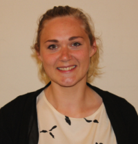
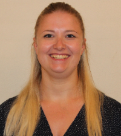

Ansatte på Billum Friskole, SFO og børnehave

×
Mit navn er Gitte Møller. Med rødder i de frie skoler, først som friskolebarn, senere efterskole- og højskoleelev, dernæst 22 år som lærer på Mejls Orten Tinghøj Friskole, glæder jeg mig til at skulle være med til at starte Billum Friskole op. Det er et stort og spændende projekt, hvor vi alle skal give noget af os selv, for at få tingene til at lykkes. Når vi løfter i flok skabes relationer, og det er netop, hvad der skal til for at mærke, at ”vi er os”. Privat går jeg til gymnastik, oplever naturen, passer dyr og køkkenhave eller laver håndværk af forskellig art
Leder
Gitte Møller

×
Jeg hedder Lea og bor i Varde med min mand Jon og vores søn Nicklas på 4 år. Jeg blev uddannet lærer i 2011 med linjefag i matematik, natur og teknologi, svømning og idræt. Jeg glæder mig rigtig meget til, at blive en del af Billum friskole. Det kan kun blive godt. Vi ses til august
Lærer
Lea

×
Mit navn er Sanne Thisgaard. Jeg bor lige nu i Aarhus, hvor jeg har boet i de sidste 8 år, og rykker nu teltpælene op og flytter ned til jer i Billum området. Jeg er uddannet fra læreruddannelsen i Aarhus med linjefagene matematik, historie og samfundsfag i juni 2017. Jeg elsker at synge og synger meget, derudover spiller jeg en del teater, mest musical og revy. Ellers laver jeg en del frivillig arbejde i KFUM og KFUK, hvor jeg hvert år laver børnelejr. Når jeg har været på børnelejr har jeg oplevet, at alle børn elsker at være og har lyst til at lære, og sådan skal børn også have det i skolen. Derfor skal vores skole være et sted hvor hver enkel elev bliver set hver eneste dag, og hvor de kan være mens de lærer.
Lærer
Sanne Thisgaard

×
Mit navn er Sannie. Jeg er 25 år og kommer fra Agerbæk. I min fritid kan jeg godt lide at være aktiv og dyrker blandt andet tabata, løb og yoga. Jeg er desuden stor sportsentusiast og følger både det lokale fodbold- og håndboldhold. Jeg er lige nu ved at færdiggøre mine sidste eksamener på læreruddannelsen i Esbjerg og kan derefter kalde mig lærer med linjefagene dansk, engelsk og historie.Jeg er stor tilhænger af at arbejde med bevægelse i undervisningen samt æstetiske læreprocesser og tror på at vi lærer bedre gennem kropsliggørelse og sanselige oplevelser i stedet for at sidde på en stol hele dagen. Jeg vil derfor gøre mit for at vi kommer op af stolene og lærer på nye og spændende måder. Jeg glæder mig utroligt meget til at komme i gang! Vi ses efter sommerferien.
Lærer
Sannie
×
Jeg hedder Lotte Karlsen og er 46 år. Jeg bor i Nørre Nebel sammen med min mand. Vi har to børn, hvoraf den ene er flyttet hjemmefra. Jeg er uddannet pædagog i 1996, og jeg har de sidste 19 år arbejdet som børnehaveklasseleder. I mit pædagogiske arbejde vægter jeg fællesskab – hjælpsomhed – hensyn – tolerance – respekt – accept – tryghed – trivsel og tillid. I min fritid nyder jeg gåture på alle årstider og jeg bruger en del tid på at hækle, strikke og sy. Jeg er ligeledes frivillig på et hospice. Jeg glæder mig meget til at møde og samarbejde med jer alle – både elever, forældre, kollegaer og lokalsamfund. Vi ses til august!
Børnehaveklasseleder
og pædagog
Lotte Karlsen